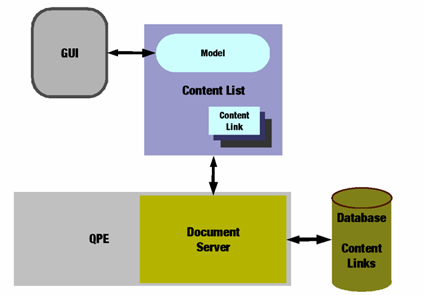

Document System
Introduction
The Qtopia Document API (DocAPI) is based around Content objects which are abstractions for user-visible files, or file-like objects. Content can be a stream such as http/wap or a file from either main or removable storage. Qtopia applications and other processes request a range of services to operate on these Content objects.

The main features of the Document System are described in the following sections:
Features provided by DocAPI include:
- allows for user-friendly naming, iconization and thumbnailing
- allows for storage level and user interface level content organization that responds to common use cases
- provides categorization functions
- allows handling of removable media up to multi-gigabyte sizes.
The following shows a common use scenario of DocAPI:
| Use Scenario |
|---|
- the user opens a file dialog or documents tab and browses for a file to open.
- while browsing, the display is updated with new information about the documents available, for example to reflect storage media inserted or removed.
- the user locates a document by filtering and navigating, then selects it.
- the document is launched in the application which called the file dialog, or in the associated application from the documents tab.
|